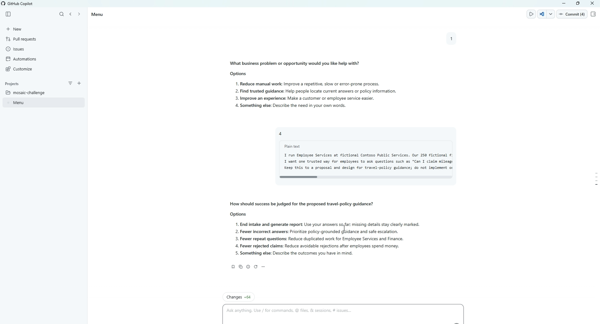
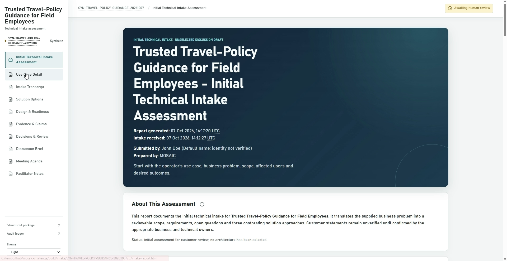

Multi-customer Orchestration System for Adaptive Intake and Continuous Delivery
From business need to governed solution dossier—in minutes, not days.
Business user -> GitHub Copilot App -> governed analysis -> 23-file dossier -> human decisions.
Repeated discovery, copied notes and inconsistent handoffs.
Adaptive intake, approved evidence and one review package.
Less preparation and rework; experts focus on decisions.
Scale the expertise. Keep the accountability.
Synthetic example: trusted travel-policy guidance for 250 field employees.


Authentic 2:55 recording. Architecture selection and design approval remain separate.
Illustrative planning model—not measured savings or a customer forecast.
Manual preparation
Retained human review
Potential effort saved: 83%
$1.6M at 100 requests/year, before additional effort and operating costs.
Adoption: synthetic proof -> customer benchmark -> isolated rollout -> scale.
Customer-specific evidence, templates, roles and approval rules.
Scale the expertise. Keep the accountability.